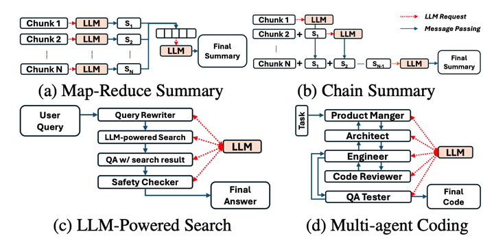
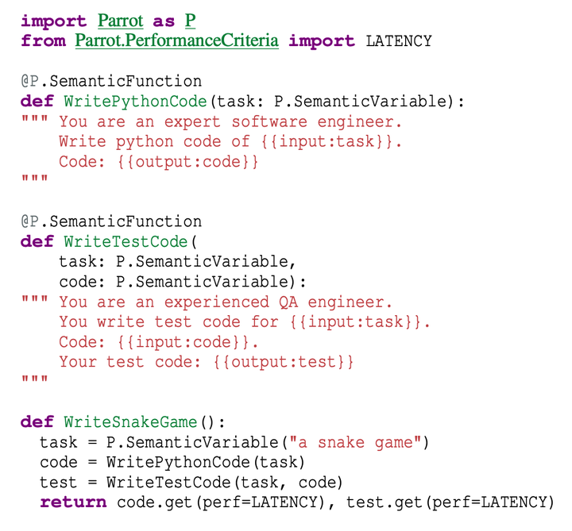
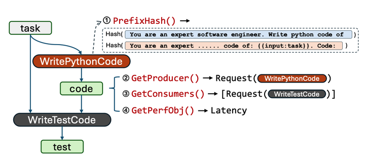
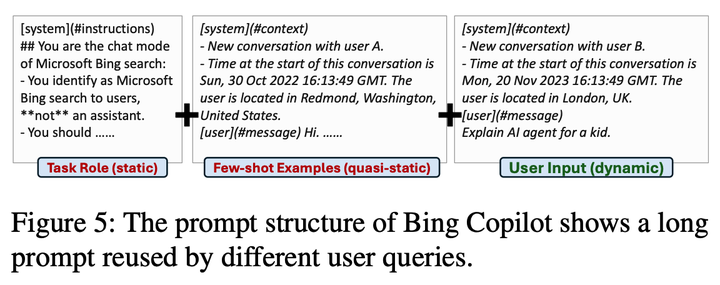
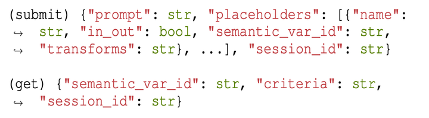
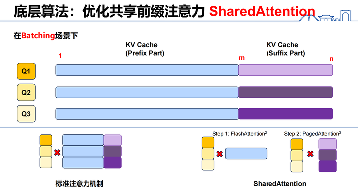

很高兴能给大家介绍我们在 OSDI’24 上的最新工作 Parrot，面向 LLM 应用 / LLM Agents 的高效大语言模型服务系统。由于现在签证还在被 Check 中，不一定有机会能去给 Talk，所以现在先写一篇 Blog 来介绍我们的工作。
18th USENIX Symposium on Operating Systems Design and Implementation (OSDI’24) 将在 Santa Clara 召开。虽然作为计算机系统界的顶会，但是在大语言模型的浪潮下，本次会议相比传统 Track，接受了许多 MLSys 尤其是 LLMSys 方面的工作，因此也被人戏称为 LLMSDI（误）。作为一名 MLSys 萌新，我也算是这个浪潮的受益者，在我科研的起步阶段中稿了一篇。
我自己觉得这个工作的最大意义并不是带来了多少加速比，而是引入了 LLM Applications 这个全新的 Serving Workload，并且提供了一个抽象进而打开了一个新的优化空间。我们的论文和代码均以开源，欢迎大家 Cite / Star / 给予任何意见！
- Parrot: Efficient Serving of LLM-based Applications with Semantic Variable
- GitHub - microsoft/ParrotServe: [OSDI’24] Serving LLM-based Applications Efficiently with Semantic Variable
什么是 LLM 应用
Large Language Models (LLMs)，即大语言模型，以其不可思议的语言理解能力闯入了公众的视野。我们这里主要讨论最流行的 Decoder-only 架构，即用自回归解码的方式一个 token 一个 token 往外蹦词，完成对于 Prompt 的续写。一开始大多数的 LLM 服务主要是聊天对话，例如最出名的 ChatGPT。不过随着大家对 LLM 能力的挖掘，大家觉得可以用这种语言理解能力干更多的事，这就出现了 LLM-based Applications 这一类新的应用范式。
简单来说，LLM 应用就是传统编程 + LLM call，即我们把调用 LLM 也作为我们编程过程中的某种原语。以总结 Arxiv 文章这个任务为例，由于一篇 Arxiv 文章的长度通常会超出 LLM 的最长上下文长度（注：这个是我们做这篇工作的现状，现在又有很多 Long Context 的工作，不过我相信并不会使得这个 setting 失去意义），我们通常会考虑将文章分片然后以某种方式放入 LLM。有两种可以参考的方式：
- Chain-style。这种方式按顺序将每个 Chunk 放入 LLM，每次的 Prompt 大概如下：”你的任务是总结一篇完整的文章，这是当前总结的内容，这是文章的一段新的部分，请你基于新的部分更新总结内容”。这个在 Langchain 里也叫 Refine。
- MapReduce。这种方式先将 Chunks 并行地放入 LLM，对于每个部分单独进行总结（Map 过程）；然后将每个 Chunk 的总结再通过一次 LLM call 合并起来（Reduce 过程）。
可以看到就在这个例子里，我们调用 LLM 就不是传统的对话式那样“线性”进行了，而是引入了 DAG 等。事实上这两个 Pattern 可以推广到很多例子，比如 Clone 下来一个 Github Repo 进行 Code Understanding，通常也需要分片然后使用 Chain-style 或者 MapReduce 等等。总之，这个例子我们看到了 DAG（有向无环图）形式的 LLM call。更复杂地，我们还会看到和 If-Node 与 For-Node 等混合起来的 LLM call，因此我们将这些范式总结成 Programming + LLM call，用这种方式写出来的应用就是 LLM 应用。
LLM 应用具有各种复杂的 Pattern
我在这篇 Blog 讲得比较细，也是希望能启发一些读者的思考，毕竟我觉得这个 Workload 还是有很多可以做的东西的（比如把一些传统数据处理技术迁移到 LLM 的 MapReduce 场景里？）。在 Paper 和 Present 里，我们把 LLM Application 和 LLM Agent 不加区别地并列起来了，因此也可以说我们做的是 Agent Serving。但实际上 Agent 更加复杂，它需要具有记忆能力、规划能力、工具调用能力等等，某种意义上可以把 Agent 看作一种复杂的 LLM App。
服务 LLM 应用的现有问题
虽然现在有各种开源模型，但是效果和 GPT4 这种大厂提供的 API 式服务还有差距，因此现在大多数 LLM 应用 / Agent Framework 都是依赖于这种公共的语言模型服务 API（也有很多是两种都提供的，但是对本地模型其实和调用 completion API 也没区别）。这里就有一个 Misalignment：我们关心的是 LLM 应用的 e2e 延迟，而在调用这种 API 时不同的 LLM call 之间完全是独立的，也就是说上一节提到的各种复杂的 Pattern（i.e. 应用端信息）被直接丢失了。那么这就会导致一些问题没有办法得到很好的优化。我们总结了三种实际的 LLM App Serving 中普遍存在的问题，并以他们为例说明如果我们解决了这个 Misalignment（将应用端信息暴露给服务端），就可以达到更好的效果。
- 额外的开销。大家使用过 GPT4 都会感觉它非常慢，由于 OpenAI 并没有公开太多细节，我们并不能知道到底哪里慢了，但是有一点是可以确定的：在模型的 inference 以外，还存在着许多额外的开销，包括但不限于网络延迟、排队等等。这种开销在 DAG 和 multi-agent 的场景下（例如频繁的对话、chain-style 的范式）对于最后的 e2e 性能的影响是不可忽视的。
- 调度目标的错位。刚刚说过我们应该优化 LLM 应用的 e2e 延迟，而由于现有 service API 的限制，后端只能将这些请求都看成各自独立的请求。对于这种情况，General 的 LLM serving 一般目标是 max throughput（vLLM 等）或者尽量低的 latency，那么这个目标和我们一开始的目标就存在 misalignment。这一错位有时候会带来很蠢的情况，比如以 Map Reduce pattern 为例子，我们知道所有的 Map 请求完成后才能进行 Reduce 请求。但是如果我们将他们都当成独立请求，就可能出现让其它 Map 请求都等待最后一个 Map 请求完成的情况，即出现 Straggler。如果我们知道某些请求在 DAG 上是 MapReduce 形式的，我们就会尽量将他们 batch 起来跑。
- 重复的计算。由于现有的 LLM 服务都需要在 prompt 前加上大量的 system prompt，而这种 system prompt 往往在不同请求彼此间共享，因此实际的 batch inference 中会存在许多重复计算。
这三个问题乍看比较独立，但是实际都可以用 “请求间的关系” 来概括：额外的开销忽视了图中不同请求的关系，调度目标的错位忽视了请求间所有关系，重复计算忽视了请求的 prompt 间存在的 affinity。因此，我们可以想到我们需要一个简单有效的抽象能让我们方便地将 LLM 请求间的各种关系暴露到服务后端。
使用 Semantic Variable 进行各种优化
Semantic Variable 的设计
基于这样的想法，我们提出了 Semantic Variable —— 一种自然优雅的跨 request 的抽象。以下是我们使用 Parrot 前端编写的一个简单的 LLM 应用：编写一段 Python 代码并撰写测试代码。
使用 Parrot 前端编写的 LLM 应用
我们在前端中将 Semantic Variable 设计为 Python 中的变量（因为本质上它们是一样的）。简单来说，Semantic Variable（以下简称 SV）是一个 string 类型的变量，它在某个 scope 具有自己的唯一 id。SV 具有两种状态：未填充以及被一个字符串的填充的状态。Parrot 提供了带有 SV 的 API，这是基于 OpenAI 的 API 的拓展：我们在 prompt 中引入了 Placeholder，可以在 prompt 的任意位置使用 这样的形式插入。每个 Placeholder 都需要绑定一个 SV，通过这种方式实现了 request 对 variable 的引用。
一个 prompt 中的 placeholder 和其绑定的 SV 可能有 input、output 两种关系：input 表示 SV 为这个 placeholder 提供值，output 表示这个 prompt 对应的请求为这个 SV 生成值。利用 placeholder 和 SV，我们可以在服务端很轻松地建立起 DAG：
基于 Semantic Variable 建立起的 Request DAG
此外，我们为 prompt 中引入 placeholder 的方式让 prompt 本身变得结构化（Structural），在 prompt 中存在字符串常量、变量（placeholder）等等。在这一点上，我们的设计其实是非常自然的，因为在 LLM 应用中通常都存在大量的 prompt engineering，这使得最后组织出来的 prompt 本身必然是结构化的，例如下面这个 MS Bing Copilot 的 prompt。
微软 Bing Copilot 的 prompt 结构
总结来讲，我们通过允许在 prompt 中引入 placeholder 扩展了现有的 API，引入了一个抽象 Semantic Variable，这带来了两种 inter-request analysis 的一系列原语（Primitives）：
- DAG-based analysis。即先利用 SV 构建出请求间的 DAG，再通过分析图上的信息提取请求间关系信息。
- Prompt structure-based analysis。即先利用 SV 将 prompt 分段，然后对每段分别进行哈希等，从而获取请求间在 prompt 结构方面的关系。
基于 Semantic Variable 的优化
在有了 SV 以及其带来的 inter-request analysis 的原语后，我们丰富了系统获取应用端信息的能力。那么拿到这些信息后，我们便可以针对上述提出的问题做一些优化。在本文中，我们主要实现了如下方面的优化。
Serving Dependent Requests
通过分析 DAG，我们能找到一些互相依赖的请求（例如请求 A 的输出是请求 B 的输入）。在复杂的 Agent 应用中存在着大量这样的 dependent requests，由于上面提到过的第一个 challenge，在这样频繁的交互下会带来大量的额外开销。
为了解决这一问题，Parrot 将请求改为异步的形式，用户可以通过带 SV 的 API 将整个执行图先提交到系统中，再对最后的 output SV 调用 “get” 来获取结果。Parrot 中会使用 graph-based executor 对这个图进行高效执行。由于这一过程 hide 了例如网络延迟等外部开销，以及在 Parrot 内部 SV 之间的通信是很高效的，同时我们在调度上会考虑请求与应用的关系从而最优化排队时间，这一系列优化使得在 Parrot 中执行这样的 dependent requests 是非常节省时间的。
Performance Objective Deduction
Parrot 的最终目标是优化应用的 e2e 的某种指标（比如 latency、throughput、TTFT…），那么我们怎样将应用的 e2e 指标应用到每个独立的请求上呢？
Parrot 给每个 SV 都附带了一个 “性能目标” 标记，这表示在 “get” 该 SV 时希望系统以什么样的目标去最优化它。由于我们是从应用的 e2e 指标出发，因此我们需要用户提供整个 DAG 的最后一个 SV 的性能目标，然后 Parrot 会在图上将这一标记 “反向传播”，最后让每一个 SV 都拥有一个性能目标。此外，对于前面提到的 MapReduce 情况，Parrot 还会采用 Grouping 的策略，让调度器尽量将它们当作整体进行调度。
Sharing Prompt Prefix
利用前文提到的 Prompt structure-based analysis，我们可以迅速找到不同请求间共享的相同前缀。Parrot 会使用类似 vLLM 的 fork 技术共享它们的 KV cache，并且 Parrot 在这一基础上支持更多情况：
- 动态情况的共享。由于我们提供了类似 placeholder 的表达方式，因此在同一个 DAG 中如果请求间共享相同的 placeholder（而非仅仅是静态字符串），即使其还没有真正具有值，Parrot 也可以预先判定出来。
- 运行时加速。Parrot 设计了特殊的 CUDA kernel 与注意力算法，使得其在共享前缀的 batch inference 时能够达到很好的加速效果。这一设计在实现细节会提到。
- 与其他优化的配合。需要注意的是，Parrot 的 Sharing Prefix 技术与其他系统中的部件是一体的，并不是独立的技术。例如配合 DAG，Parrot 具有 DAG 上的 sharing 能力；同时 Parrot 的 prefix-aware scheduling 也利好了 sharing prefix。总之，Parrot 通过多种优化技术之间协同工作产生化学反应，这一切都是建立在这些优化基于相同的抽象的基础上。
Application-Centric Scheduling
这里主要讲的是 cluster-level scheduling，即把请求分配到哪个 engine 上的问题。这里的调度主要是和上面三种优化配合进行的：对于 dependent requests，Parrot 会优先进行调度来减少排队时间；对于带有特定性能目标标记的请求，Parrot 会根据不同的标记进行调度，以及将 group 的请求当作一个整体进行调度；此外，Parrot 会将相同 prefix 的请求调度到相同的机器上来最大化共享前缀的机会。总之，Parrot 的调度是一个比较综合性的、启发式的算法。
一些实现细节
前端 API 设计
Parrot 的 API：submit 和 get
除了给传统的 API 加上 SV 外，就像之前提到的，为了尽量减少通信开销以及系统设计上的考虑，Parrot 将原本的 API 拆分成了 “submit” 和 “get” 的异步（Asynchronous）形式，具体来说：
- submit 负责提交一个请求到系统中，请求中可能会带有一些 output SV，这些 SV 的 id 可以在 submit 请求的回复中拿到，但是无法立刻拿到 generated 的结果。
- get 表示希望获得某个 SV 的 generated text。这一请求会一直 blocking，直到系统将该 SV 填充完毕。
可以发现这种设计配合 SV 能非常优雅地实现将 DAG 提交到系统中这一操作。
加速共享前缀的注意力 Kernel
这一部分我们并没有作为一个独立的工作来发布，事实上我个人觉得这是一个非常不错的小优化。这一点和 FlashInfer 的 Cascade Inference 和 ChunkAttention 都是 concurrent work，原理也非常像，都是利用类似 Flash Decoding 的技术将公共前缀和后缀的注意力分段计算，由于公共前缀只需要计算一个，所以在 I/O 上非常高效。
我们算法的大致示意图，节选自我的毕设 PPT
Manager 和 Engine 之间的通信 API：Universal Engine Abstraction
为了统一 Engine 的接口方便中心化的 Manager 进行管理，我们需要规定一种足够抽象并且能力足够强的 API 来满足我们的需求。在经过不断的简化之后，我们最后对 Parrot Engine 总结出了如下的简单的 API 抽象：即带有上下文的 Fill / Generate。
其中，Fill 取名自 LLM 的 prefill 阶段，但是由于我们这里可以在中间 Fill（也就是不一定 “pre”）因此修改了一下名字；Generate 则是 LLM 的自回归 decode 阶段。并且我们在这里引入上下文（Context）的概念。Context 指一段 LLM 的 tokens 以及对应 KV Cache。对于一个 Context，我们可以做如下三种操作：
- Fill: 给这一 Context 填充若干 tokens，包括计算对应的 KV Cache。
- Generate: 在这一 Context 的基础上往后自回归 decode 一小段。
- FreeContext: 释放该 Context。
 Parrot Engine API
Parrot Engine API
这三个 APIs 简单而直接地实现了”带上下文管理”的 LLM 功能（其中 fork 能力被包含在 Fill/Generate API 里），并且我们可以发现这里的设计和 SV 带来的 prompt 结构化拆解是天然对应的（字符串常量、input placeholder 对应 Fill，output placeholder 对应 Generate），使得整个系统看起来简洁而漂亮。
总结
这里就不讲 Evaluation 部分了，大家感兴趣的话可以直接看我们的论文，这里借着博客我更多讲一些论文里看不到的东西（各种细节以及设计思想等等）。总的来讲，我个人认为 Parrot 的主要贡献有两方面：
- 一个是给 Serving 带来一个新的 Workload —— LLM 应用，并且是提供了一个 idea，即对于这种 LLM 应用的服务不应该把请求间都当成独立的来看待，而应该暴露应用端请求给服务端。
- 另一个是一些技术细节部分，包括 API 设计、Engine API 设计我认为都比较漂亮，希望为之后的其他工作的设计提供一些参考。此外，加速公共前缀的那个 Kernel 我认为也非常有价值（不然也不会有那么多 concurrent work 了对吧）。
LLM serving 这个领域我个人感觉在今年的 OSDI 之后，low-hanging fruit 越来越少了，在卷的同时也越来越难做新的东西。在这种情况下，尝试研究某些特定场景下的 serving（LLM Application / Agent）也许也是一种好思路，希望 Parrot 能在这方面做一点微小的贡献。